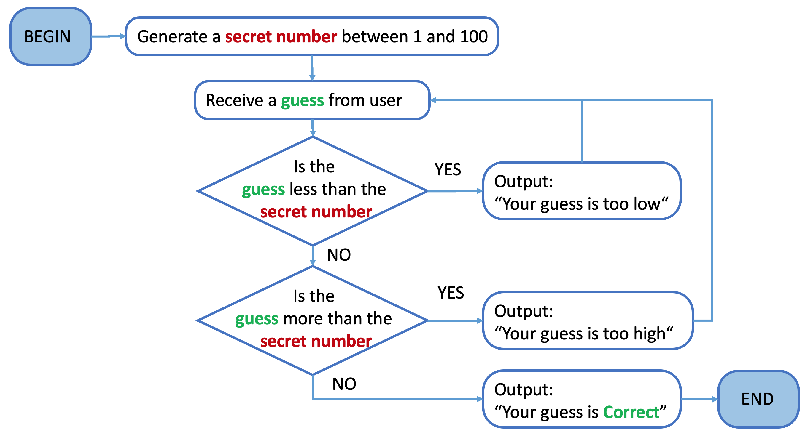

Control Flow: Conditional (while) Loops
Number Guessing
Guess the number selected by your computer.

import random
running = True
while running:
n = random.randint(1, 100)
while True:
guess = int(input("Enter an integer between 1 and 100: "))
if guess < n:
print("Your guess is too low")
continue
elif guess > n:
print("Your guess is too high")
continue
else:
print("You guess is correct!")
break
user_choice = input("Do you want to make another guess? (Y/N): ")
if (user_choice.lower().startswith("n")):
running = False
print("Goodbye")
What are the possible strategies for guessing the number?
- Start guessing from the lowest number (1) and increment by 1
- Best Case: 1 iteration
- Worst Case: 100 iterations
- Start guessing from the highest number (100) and decrement by 1
- Best Case: 1 iteration
- Worst Case: 100 iterations
- Always pick a random number
- Best Case: 1 iteration
- Worst Case: 100 iterations
- Pick any number and keep track of lower and upper bounds of previous guesses
- When you guess “too high”, the guessed number is the new upper bound of your guessing range.
- When you guess “too low”, the guessed number is the new lower bound of your guessing range.
- Best Case: 1 iteration
- Worst Case: 100 iterations
- try the sequence “1, 100, 2, 99, 3, 98,…” when the secret number is “50”
- Or try “1,2,3,…” when the secret number is “100”)
- Start from the middle (50) and always select the middle number of the remaining guessing range
- When you guess “too high”, the guessed number is the new upper bound of your guessing range.
- When you guess “too low”, the guessed number is the new lower bound of your guessing range.
- Best Case: 1 iteration
- Worst Case: 8 Iterations